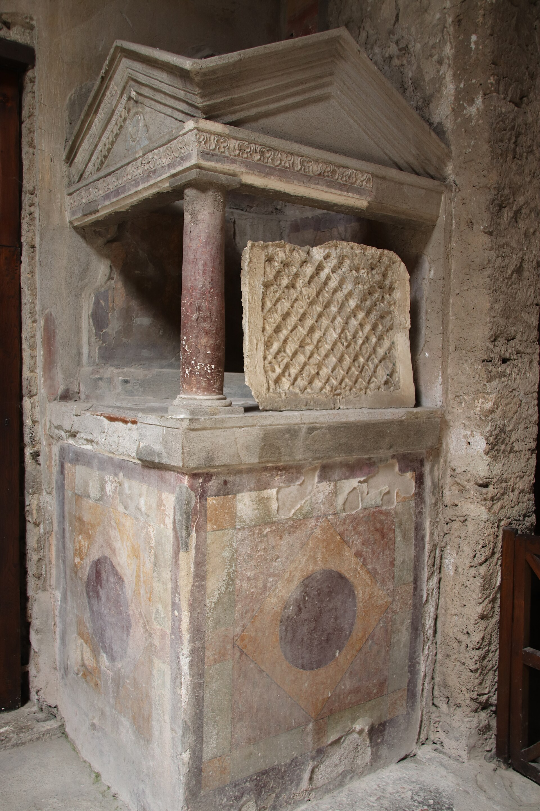

Titus Caecilius
Peasant Smallholder · Central Italy

You are the most common person in the Roman world. You work land — maybe six iugera (about four acres) — that your family has held since your grandfather's time. You grow emmer wheat, tend a few olive trees, and keep goats. You have never been to Rome, though it is only four days' walk south.
Childhood and family. Your father, also Titus, had three sons and two daughters. One brother died in infancy from a fever; the other drowned in the Liris river at age nine. Both sisters survived to marriage. Your mother, Pacula, was from a neighboring farm family. She died giving birth to a stillborn sixth child when you were fourteen. Your father remarried a widow with one surviving son of her own.
Youth and the Social War (91–88 BC). When you were fourteen, the Social War erupted. Arpinum was already enfranchised (it was Marius's and Cicero's hometown), so your family was not among the rebel Italians — but the war tore through the countryside around you. A neighbor's farm was burned by Samnite raiding parties. Refugees from Venafrum sheltered in your village for two seasons. Your father sold a goat and half the olive harvest at terrible prices because markets had collapsed. After the war, much of Italy received Roman citizenship, but for you, a peasant who would never vote in Rome anyway, it changed nothing practical.
Marriage and adulthood. At twenty you married Volumnia, the daughter of a small landholder two valleys over. Her dowry was a half-iugerum plot and six amphorae of olive oil. You had five children over ten years. Two died: one girl at eight months from what was probably dysentery, and a boy at age three during a harsh winter. Three survived to adulthood — two sons and a daughter.
Sulla and the proscriptions (82–80 BC). You were twenty-three when Sulla marched on Rome for the second time. The proscriptions that followed were an urban and aristocratic horror — senators and equestrians murdered, their property seized. For you, the main impact was indirect: Sullan veterans were settled on confiscated land across Italy under the lex Cornelia. A colony of veterans was planted near Praeneste, and some of those men muscled into local markets, undercutting your grain prices with their larger, stolen holdings. Your father cursed Sulla nightly, not out of political principle, but because wheat fetched less at the Arpinum market.
Middle years and Caesar's civil war. Decades passed in the rhythms of planting, harvest, olive pressing, and livestock. Your elder son married and worked the farm alongside you. Your daughter married a fuller's son in the nearest town. Then, in 49 BC, Caesar crossed the Rubicon. Again, armies moved through the Italian countryside. You were fifty-six. Pompeian recruiters came through the district pressing men into service; your younger son, twenty-four, was taken. He served in Pompey's army, survived Pharsalus (48 BC), and walked home seven months later, gaunt and missing two fingers on his left hand from a sword cut.
Death. You died around 42 BC, likely from what we'd now recognize as a respiratory infection that worsened into pneumonia. You never learned to read. You voted once, walking to a nearby town for a local election where a patron told you which name to support. You worshipped the Lares at a small household shrine, sacrificed to Ceres before planting, and were buried on the farm, near your father and your dead children. The land passed to your elder son.

What shaped this life
Subsistence agriculture, informal patronage networks, seasonal markets, military disruption every twenty years, high infant mortality, and total distance from the political sphere despite living in the homeland of the Republic. This was the default Roman life.
- Roman agriculture
- ACOUP — Bread, How Did They Make It? Part I: Farmers!
- Social War (91–88 BC)
- Sulla and the proscriptions
- Arpinum (Arpino)
- Lares and household religion
Every image above is a real museum artifact or photograph; full attribution on the credits page.